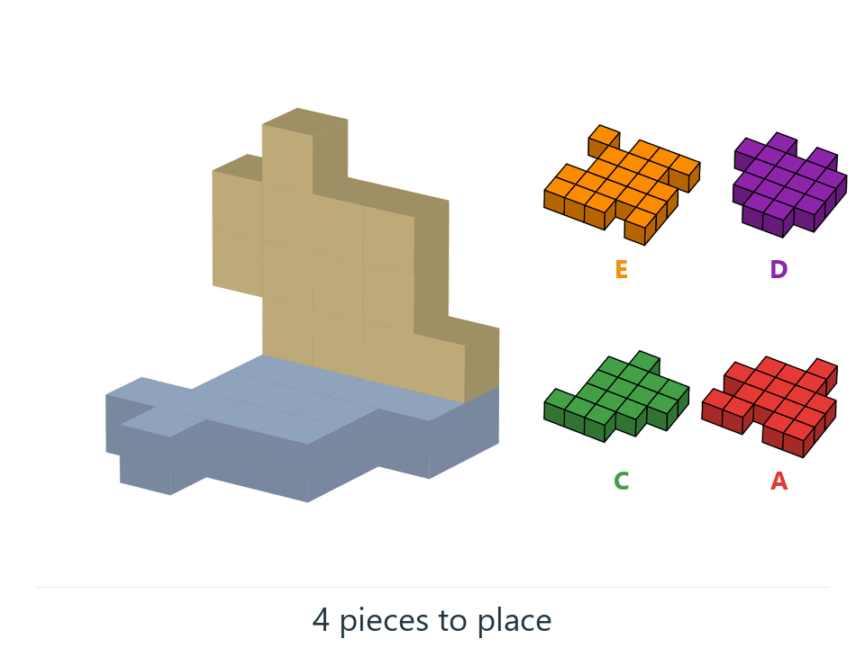
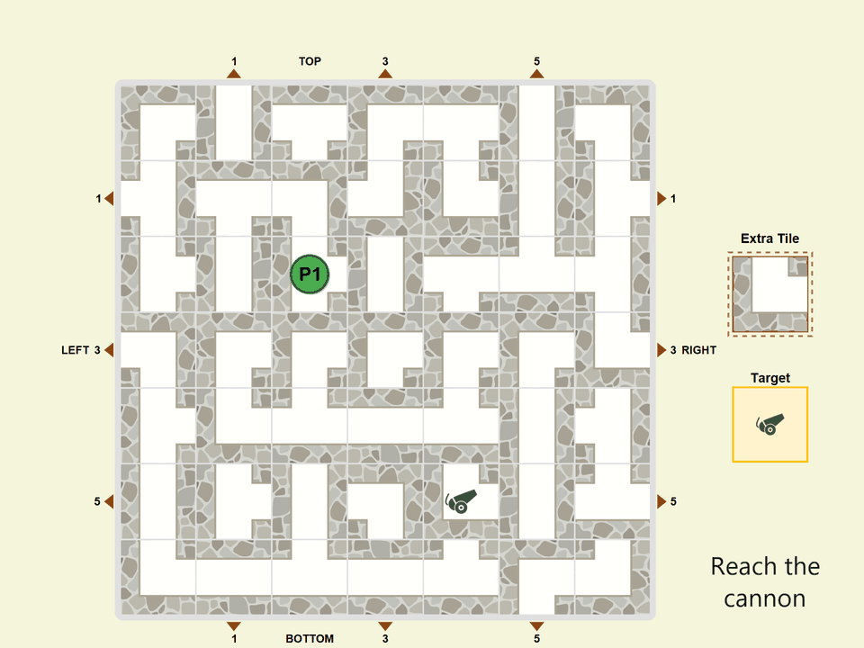
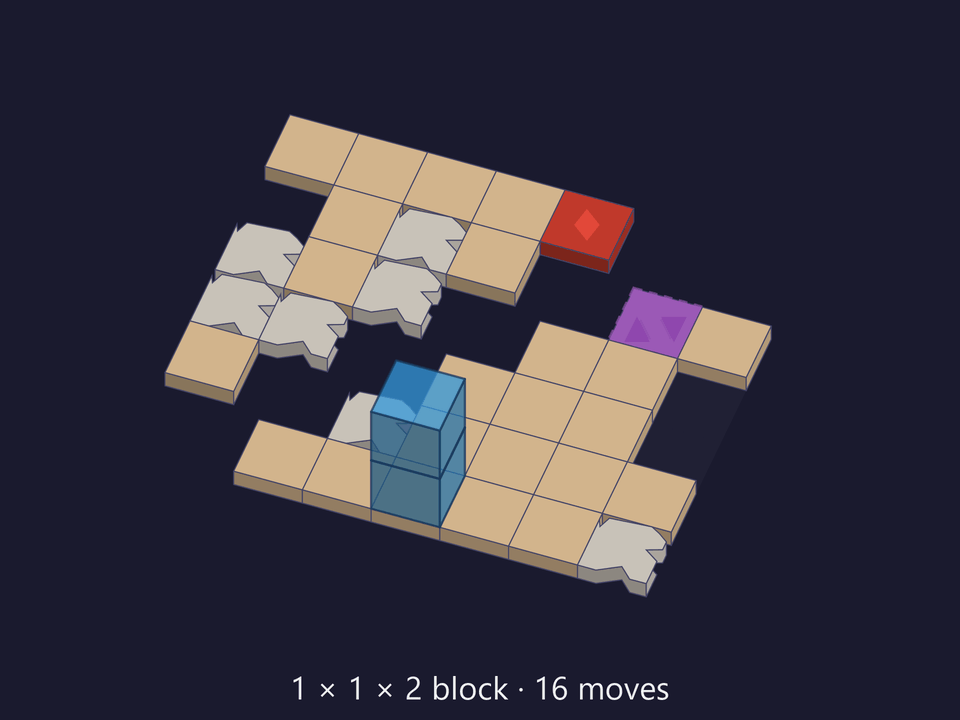
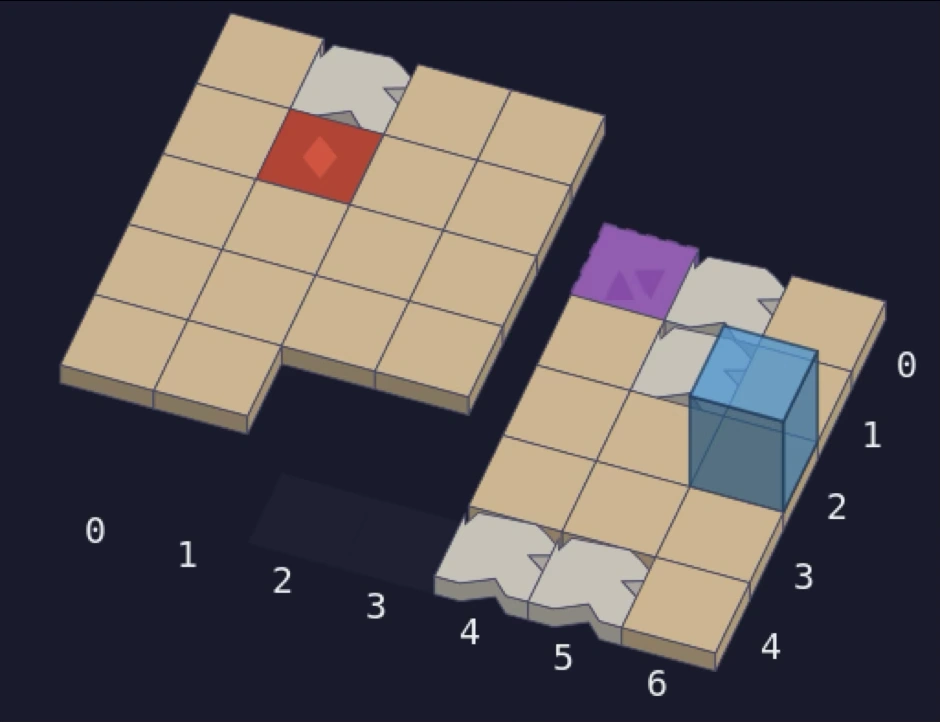
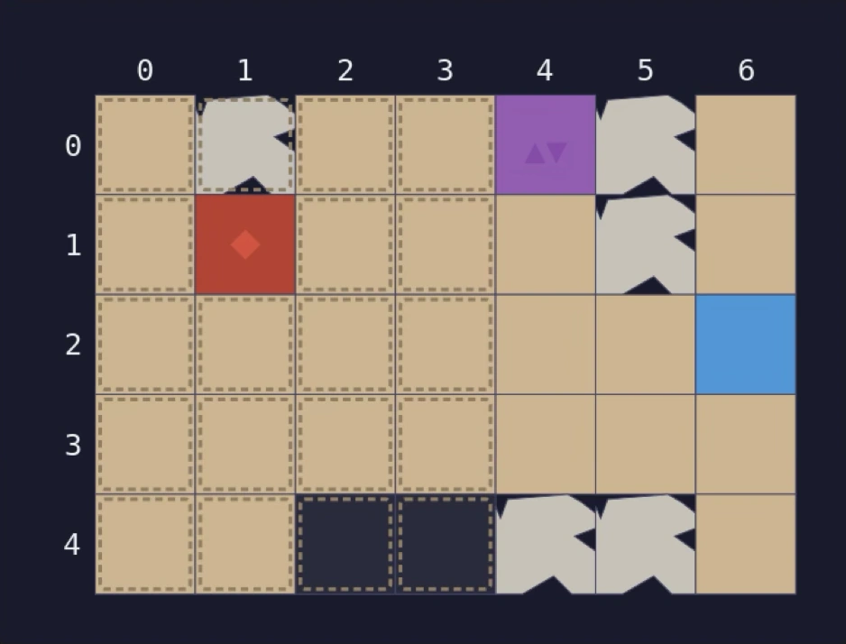

NeurIPS 2026 · Evaluations and Datasets
MARBLE: An Agentic Benchmark for Spatial Reasoning and Visual Abstraction
1EPFL
2ETH Zurich


Benchmark design: isolating visual abstraction from planning
Spatially grounded agents need two capabilities: visual abstraction—turning raw images into structured spatial states—and long-horizon planning over how actions transform those states. MARBLE controls difficulty along these two axes by independently varying observation format and required planning horizon. Crossing them yields standardized Easy and Hard splits alongside matched single-factor ablations.
Observation Format
Visual-to-spatial abstraction

Rendered imageblock: (6, 2), STANDING
height: LOW (0)
goal: (1, 1), HIGH (1)
elev: (4, 0)
crumble: (1,0), (5,0), ...
low: ####..C / ...
high: ..C..## / ...In visual-only tasks, agents must recover this state from pixels; in symbolic-augmented tasks, it is provided alongside the image.
Two-Axis Difficulty Control
Four controlled benchmark splits
Short horizon
Long horizon
Visual-only
Ablation split
↑ Isolates visual abstraction
Hard split
Long horizon, images only
Symbolic-aug
Easy split
Short horizon + symbolic
Ablation split
→ Isolates planning horizon
Planning horizon →
Varying one axis at a time from the Easy split separates planning horizon (horizontal) from visual abstraction (vertical).
Frontier models excel on Easy, collapse on Hard
We evaluate ten open- and closed-weight MLLMs in multi-turn interaction alongside experienced human players. On the Easy split—where horizons are short and symbolic states are provided—MARBLE cleanly separates model capabilities, and leading frontier systems match or exceed human performance.
On the Hard split, performance collapses across the board: every model fails completely on hard CUBE, and even the strongest frontier systems fall into the single digits overall. Humans, by contrast, remain steady across difficulty tiers.
Multi-turn task success & easy–hard gap
Interactive puzzle completion rate (%). Switch environments to inspect per-task performance.
Visual abstraction—not planning horizon—is the major bottleneck
Because the Hard split changes planning horizon and observation format together, we run a controlled 2×2 ablation on two leading open-weight models—Kimi K2.6 and Gemma 4 31B—varying one axis at a time.
Extending the planning horizon with symbolic states intact mainly affects the smaller model, while Kimi K2.6 remains virtually unchanged. Removing symbolic states at the same short horizon, however, collapses both models across every environment—showing that extracting accurate spatial states from vision, rather than planning itself, is the primary bottleneck.
Controlled 2×2 ablation: horizon vs. observation format
Matched pairwise comparisons isolating planning horizon (left) from visual abstraction (right).
Models fail on simple spatial state parsing
To probe visual abstraction directly with no planning involved, we evaluate atomic spatial state parsing: reconstructing a CUBE piece grid, a MAZE board's tile types and rotations, or a BLOX board's layout and pose from a single image.
Humans find these parsing tasks effortless, achieving near-perfect accuracy across all three environments. Frontier MLLMs trail far behind—struggling especially on dense MAZE tile orientations—confirming that models fail to read basic spatial states before planning even begins.
Per-cell spatial state parsing accuracy (%)
Direct image-to-grid extraction without planning, compared against the near-100% human ceiling.
CUBE 5×5 filled cells
MAZE 7×7 tile (I/L/T) & rotation (0–3)
BLOX layout, pose & goal
Two follow-up probes reveal why parsing breaks down and how far tools can help. Rendering the exact same CUBE and BLOX states from a flat 2D top-down view instead of 3D isometric lifts every model substantially, pointing to isometric projection as a key source of error. Equipping models with Python code execution also improves MAZE parsing consistently—most sharply for Gemini 3.1 Pro, which iteratively crops tiles and verifies edge pixels.
Probe A · Viewpoint
Isometric 3D vs. flat 2D gap
BLOX · Isometric 3D

BLOX · Flat 2DProbe B · Agentic Vision
Code-assisted MAZE parsing
Per-cell MAZE accuracy with vision only vs. Python code execution.
Citation
@inproceedings{jiang2026marble,
title = {MARBLE: An Agentic Benchmark for Spatial Reasoning
and Visual Abstraction},
author = {Jiang, Yulun and Ouerghemi, Na{\"e}l and Chai, Yekun
and Brbi{\'c}, Maria and Moor, Michael},
booktitle = {Advances in Neural Information Processing Systems},
note = {Evaluations and Datasets Track},
year = {2026}
}